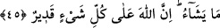
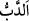
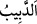
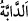

“nisyân”dan gelir ve şer de beşerden bir cüzdür. Şu halde insan günah işlediğinde bütün
himmeti Allah Teâlâ’dan af ve rahmet taleb etmek olmalıdır. Günahını büyük görerek
tevbeden geri durmamalıdır. Düşünmelidir ki Allah Teâlâ ezelî olan zâtını hiçbir
beşerin ve günahın, hatta hiçbir hâdisin (sonradan olan) mevcûd bulunmadığı bir demde
gaffâriyet/günahları bağışlayıcılık ve tevvâbiyet/tevbeleri çok kabul edicilik sıfatları ile
tavsif etmiştir. Bu sıfatlar, insanın günah işleyebileceğini gösterir. Çünkü bağışlama
ancak günahla ilgili bir vasıftır. Bu sebeple Hâfız der ki:
Allah katında kulun suçunun, hatâsının bir itibarı yoksa
Suçları bağışlayan Allah’ın af ve rahmetinin anlamı nedir?
Allah kalb semâsından, oradaki kasvetlerden Hakk’ın kahretme ve perişan bir halde
terk etme (hizlân) dolularını indirerek bunu şakâvet ehlinden dilediği kimselere isâbet
ettirir. Saâdet ehlinden dilediği kimselerden de onu uzak tutar. O’nun kahır şimşeğinin
parıltısı neredeyse basîretleri alır. Allah, Âdem (a.s.) hakkında yaptığı gibi dilediği
kimsenin mâsıyet gecesini tâat gündüzüne; İblîs hakkında yaptığı gibi de dilediği
kimsenin tâat gündüzünü mâsıyet gecesine çevirir. Muhakkak bu çevirmelerde, basîret
sâhipleri için Allah’ın lütuf ve kahır tecellîlerini evirip çevirme (taklîb) aynasında
seyretmeleri bakımından büyük bir ibret vardır. et-Te’vîlâtü’n-Necmiyye’de böyle
geçmektedir.
45. Allah, her canlıyı sudan yarattı. İşte bunlardan kimi karnı üstünde sürünür,
kimi iki ayağı üstünde yürür, kimi de dört ayağı üstünde yürür... Allah dilediğini
yaratır; şüphesiz Allah her şeye kadirdir.
“Allah,” yeryüzünde yürüyen “her canlıyı sudan yarattı.”
el-Müfredât’ta der ki: “__WORD__ ve “__WORD__, hafif yürüyüş demektir. Bu kelime,
hayvanlarla, çoğunlukla da haşerât hakkında kullanılır.” Burada “__WORD__, mutlak olarak
yürüyen ve hareket eden canlılardan ibâret değildir. Bilakis yeryüzünde yürüyen ve
meskeni orada olan canlılara verilen bir isimdir. Dolayısıyla melekler ve cinler bu
kelimenin kapsamından çıkar. Çünkü melekler nûrdan, cinler ise ateşten
yaratılmışlardır.
Fethü’r-Rahmân’da der ki: “Allah dünyada görülen her canlıyı (sudan) yaratmıştır.
Melekler ve cinler buna dâhil değildir. Çünkü biz onları göremeyiz.”
Âyetteki “su”dan maksad, her canlının maddesinin bir cüz’ü, yâni dört unsurdan